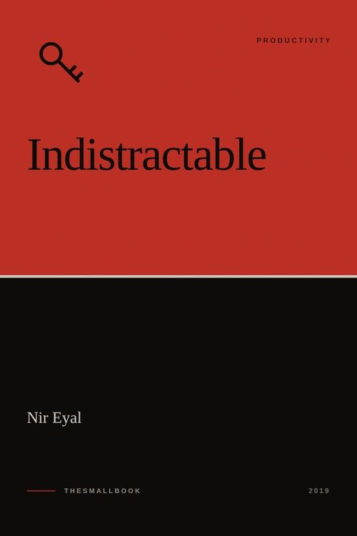
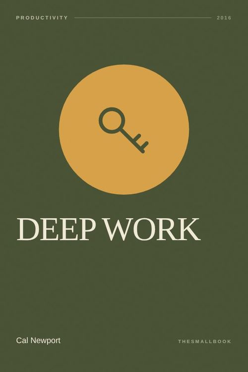

Library › Ask the Library › How do I stop scrolling on my phone?
How do I stop scrolling on my phone?
The short answer
The feed is engineered by the smartest minds on earth, you can't win with willpower. Win with design: bind future you, reset your dopamine baseline, and make the pool boring.
The books behind the answer

Indistractable
Nir Eyal · 2019 · 8 min · 6 lessons
You're not distracted by your phone - you're distracted by discomfort. Master your triggers and timebox your life.
- Pacts: Bind Future You: Delete the app, put the charger across the room, announce your rule, bind future you before the urge arrives.

Dopamine Nation
Dr. Anna Lembke · 2021 · 8 min · 6 lessons
Pleasure and pain share one brain circuit - press pleasure too often and the brain fights back with pain. The fix: deliberate discomfort and dopamine fasts.
- The Dopamine Fast: 30 Days to Reset the Balance: Your reward system is hijacked by cheap hits. A fast resets the baseline so real things feel good again.

Make Time
Jake Knapp & John Zeratsky · 2018 · 8 min · 6 lessons
You can't add hours, but you can design them: one Highlight a day, and a phone that works for you, not on you.
- The Infinity Pool: The feed is a pool engineered to keep you swimming. Log out, delete, move it off your home screen.

Deep Work
Cal Newport · 2016 · 9 min · 7 lessons
Deep work is rare exactly when it's most valuable. Master focus, and you're competing against almost nobody.
- Drain the Shallows: Batch shallow tasks, checking the feed is shallow work that steals deep hours.
A failure that proves it
Why did Clubhouse fail?
2023 · STARTUP · Loss: $4B valuation → cultural footnote
Clubhouse burned hot on hype, then vanished when attention moved. Your attention is worth more than a feed, spend it like a company.
Ask what your growth is borrowing from: a moment, a gimmick, or a real recurring need. Features get copied in a quarter - retention loops and owned communities are the only defensible parts.
Also asked in Hindi and Hinglish
People also ask this as: mobile ki aadat kaise chhodein, phone scrolling kaise band karein. The answer on this page stays in simple English, and the live book can be read in Hindi or Hinglish.
Questions people ask next
Can I read this in Hindi?
Yes. This answer is written in simple English. Open any linked book and choose Hindi or Hinglish to read the full lessons in your language, with audio where available.